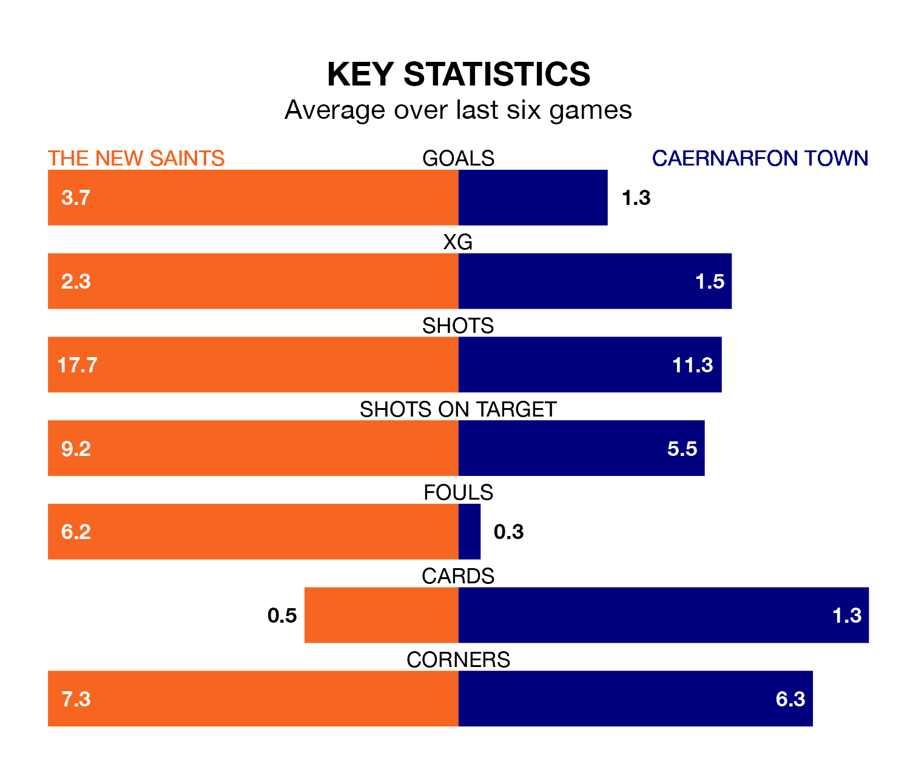

The New Saints host Caernarfon Town in Friday's late match at the Park Hall Stadium looking to bounce back from defeat last time out in the Welsh Premier League.
The Saints, who sit top of the league after 28 games, fell to a 0-1 away defeat to Newtown on March 16.
They face a Caernarfon side who also lost their last match, a 2-1 defeat to Cardiff Met, and who sit fourth in the table.
With 99 goals in 28 games so far this season, The New Saints are the league's highest scorers with 3.5 goals per game. And they are conceding fewer than average, letting in 16 goals at a rate of 0.6 per game.
Caernarfon are also above average scorers, with 1.7 goals per game, compared to a league average of 1.5. They have conceded 1.9 goals per game.
The Saints are in exceptional form in the Welsh Premier League, with six wins and no losses from their last six games.
With two wins and two draws over that period, Town's form is much worse – they have taken eight points from 18, compared to the hosts' 18.
In the last 10 years, The New Saints and Caernarfon have played each other on 20 occasions. The New Saints won 17 of them, Caernarfon two, and they drew once.
On average, the Saints scored 2.7 goals and the Canaries 0.6 in those matches.
Their last meeting was on February 23, when The New Saints won 8-1 away.
Updated: 12:16 (UTC), 25/03/24